|
Trilinos
|
|
Trilinos
|
This file first gives an example of how to create an Epetra_CrsMatrix object, then it details the supported matrices and gives a list of required parameters.
Given an already created Epetra_Map, Galeri can construct an Epetra_CrsMatrix object that has this Map as RowMatrixRowMap(). A simple example is as follows. Let Map be an already created Epetra_Map* object; then, a diagonal matrix with
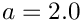
on the diagonal can be created using the instructions#include "Galeri_CrsMatrices.h"
using namespace Galeri;
...
string MatrixType = "Diag";
List.set("a", 2.0);
Epetra_CrsMatrix* Matrix = CreateCrsMatrix(MatrixType, Map, List);
More interesting matrices can be easily created. For example, a 2D biharmonic operator can be created like this:
List.set("nx", 10);
List.set("ny", 10);
Epetra_CrsMatrix* Matrix = Galeri.Create("Biharmonic2D", Map, List);
For matrices arising from 2D discretizations on Cartesian grids, it is possible to visualize the computational stencil at a given grid point by using function PrintStencil2D, defined in the Galeri namespace:
#include "Galeri_Utils.h" using namespace Galeri; ... // Matrix is an already created Epetra_CrsMatrix* object // and nx and ny the number of nodes along the X-axis and Y-axis, // respectively. PrintStencil2D(Matrix, nx, ny);
The output is:
2D computational stencil at GID 12 (grid is 5 x 5)
0 0 1 0 0
0 2 -8 2 0
1 -8 20 -8 1
0 2 -8 2 0
0 0 1 0 0
To present the list of supported matrices we adopt the following symbols:
Cartesian2D. The values of nx and ny are still available in the input list;Cartesian3D. The values of nx, ny and nz are still available in the input list;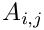
indicates the matrix of the element in MATLAB notation (that is, starting from 1).
matrix of the element in MATLAB notation (that is, starting from 1).The list of supported matrices is now reported in alphabetical order.
BentPipe2D (MAP2D, PAR): Returns a matrix corresponding to the finite-difference discretization of the problem
![\[
- \epsilon \Delta u + (v_x,v_y) \cdot \nabla u = f
\]](form_224.png)
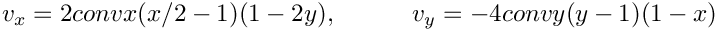
The value of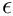
can be specified usingdiff, and that of  using
using conv. The default values are diff=1e-5, conv=1.BigCross2D (MAP2D, PAR): Creates a matrix corresponding to the following stencil:
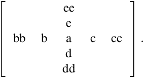
The default values are those given byLaplace2DFourthOrder. A non-default value must be set in the input parameter list before creating the matrix. For example, to specify the value of 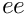
, one should do List.set("ee", 12.0);
Matrix = Galeri.Create("BigCross2D", Map, List);BigStar2D (MAP2D, PAR): Creates a matrix corresponding to the stencil
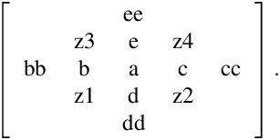
The default values are those given byBiharmonic2D.Biharmonic2D (MAP2D, PAR): Creates a matrix corresponding to the discrete biharmonic operator,
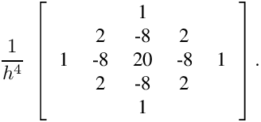
The formula does not include the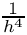
scaling.Cauchy (MAP, MATLAB, DENSE, PAR): Creates a particular instance of a Cauchy matrix with elements 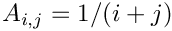
. Explicit formulas are known for the inverse and determinant of a Cauchy matrix. For this particular Cauchy matrix, the determinant is nonzero and the matrix is totally positive.Cross2D (MAP2D, PAR): Creates a matrix with the same stencil of Laplace2D}, but with arbitrary values. The computational stencil is
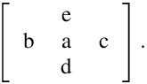
The default values are
List.set("a", 4.0);
List.set("b", -1.0);
List.set("c", -1.0);
List.set("d", -1.0);
List.set("e", -1.0);For example, to approximate the 2D Helmhotlz equation
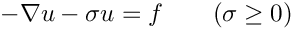
with the standard 5-pt discretization stencil
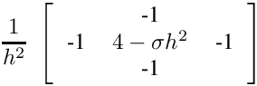
and
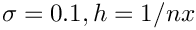
, one can set List.set("a", 4 - 0.1 * h * h);
List.set("b", -1.0);
List.set("c", -1.0);
List.set("d", -1.0);
List.set("e", -1.0);The factor
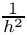
can be considered by scaling the input parameters.Cross3D (MAP3D, PAR): Similar to the Cross2D case. The matrix stencil correspond to that of a 3D Laplace operator on a structured 3D grid. On a given x-y plane, the stencil is as in Laplace2D. The value on the plane below is set using f, the value on the plane above with g.Diag (MAP, PAR): Creates 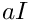
, where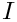
is the identity matrix of sizen. The default value is List.set("a", 1.0);Fiedler (MAP, MATLAB, DENSE, PAR): Creates a matrix whose element are 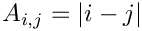
. The matrix is symmetric, and has a dominant positive eigenvalue, and all the other eigenvalues are negative.Hanowa (MAP, MATLAB, PAR): Creates a matrix whose eigenvalues lie on a vertical line in the complex plane. The matrix has the 2x2 block structure (in MATLAB's notation)
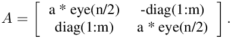
The complex eigenvalues are of the form a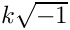
and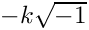
, for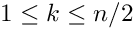
. The default value isList.set("a", -1.0);
Hilbert (MAP, MATLAB, DENSE, PAR): This is a famous example of a badly conditioned matrix. The elements are defined in MATLAB notation as .JordanBlock (MAP, MATLAB, PAR): Creates a Jordan block with eigenvalue lambda. The default value is lambda=0.1;KMS (MAP, MATLAB, DENSE, PAR): Create the  Kac-Murdock-Szego Toepliz matrix such that
Kac-Murdock-Szego Toepliz matrix such that 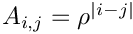
(for real only). Default value is
only). Default value is 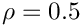
, or can be usingrho. The inverse of this matrix is tridiagonal, and the matrix is positive definite if and only if 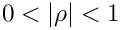
. The default value isrho=-0.5;Laplace1D (MAP, PAR): Creates the classical tridiagonal matrix with stencil 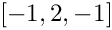
.Laplace1DNeumann (MAP, PAR): As for Laplace1D, but with Neumann boundary conditioners. The matrix is singular.Laplace2D (MAP2D, PAR): Creates a matrix corresponding to the stencil of a 2D Laplacian operator on a structured Cartesian grid. The matrix stencil is:
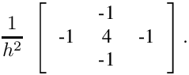
The formula does not include the scaling.Laplace2DFourthOrder (MAP2D, PAR): Creates a matrix corresponding to the stencil of a 2D Laplacian operator on a structured Cartesian grid. The matrix stencil is:
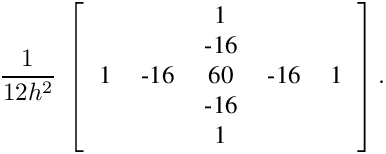
The formula does not include the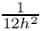
scaling.Laplace3D (MAP3D, PAR): Creates a matrix corresponding to the stencil of a 3D Laplacian operator on a structured Cartesian grid.Lehmer (MAP, MATLAB, DENSE, PAR): Returns a symmetric positive definite matrix, such that
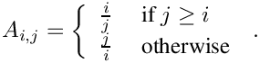
This matrix has three properties: is totally nonnegative, the inverse is tridiagonal and explicitly known, The condition number is bounded as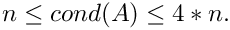
Minij (MAP, MATLAB, DENSE, PAR): Returns the symmetric positive definite matrix defined as 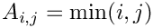
.Ones (MAP, PAR): Returns a matrix with 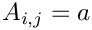
. The default value isa=1;Parter (MAP, MATLAB, DENSE, PAR): Creates a matrix 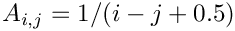
. This matrix is a Cauchy and a Toepliz matrix. Most of the singular values of A are very close to .
.Pei (MAP, MATLAB, DENSE, PAR): Creates the matrix
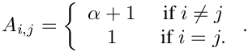
This matrix is singular for or
or 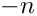
. The default value for is 1.0.
is 1.0.Recirc2D (MAP2D, PAR): Returns a matrix corresponding to the finite-difference discretization of the problem
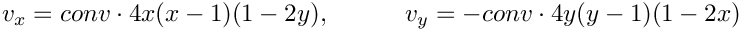
The value of can be specified usingdiff, and that of using conv. The default values are diff=1e-5, conv=1.Ris (MAP, MATLAB, PAR): Returns a symmetric Hankel matrix with elements 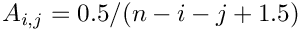
, where is problem size. The eigenvalues of A cluster around
is problem size. The eigenvalues of A cluster around 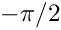
and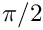
.Star2D (MAP2D, PAR): Creates a matrix with the 9-point stencil:
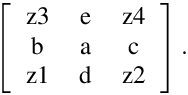
The default values are List.set("a", 8.0);
List.set("b", -1.0);
List.set("c", -1.0);
List.set("d", -1.0);
List.set("e", -1.0);
List.set("z1", -1.0);
List.set("z2", -1.0);
List.set("z3", -1.0);
List.set("z4", -1.0);Stretched2D (MAP2D, PAR): Creates a matrix corresponding to the following stencil:
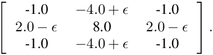
This matrix corresponds to a 2D discretization of a Laplace operator using bilinear elements on a stretched grid. The default value isepsilon=0.1;Tridiag (MAP, PAR): Creates a tridiagonal matrix with stencil
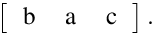
The default values are List.set("a", 2.0);
List.set("b", -1.0);
List.set("c", -1.0);UniFlow2D (MAP2D, PAR): Returns a matrix corresponding to the finite-difference discretization of the problem
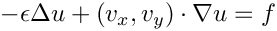
on the unit square, with homogeneous Dirichlet boundary conditions. A standard 5-pt stencil is used to discretize the diffusive term, and a simple upwind stencil is used for the convective term. Here,
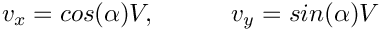
that corresponds to an unidirectional 2D flow. The default values are List.set("alpha", .0);
List.set("diff", 1e-5);
List.set("conv", 1.0);